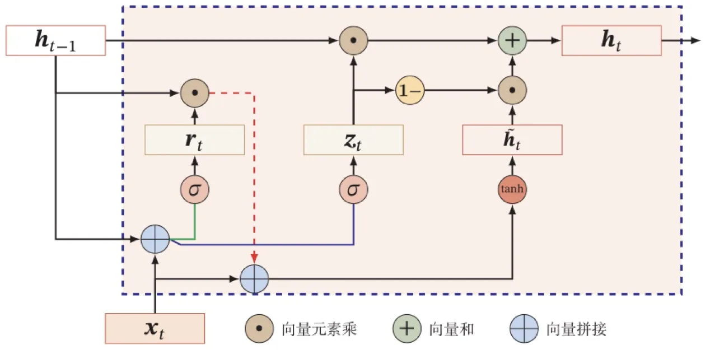

计算机视觉 · 第 7 章 循环神经网络
7.7 门控循环单元 GRU
门控机制的第二个代表是门控循环单元（Gated Recurrent Unit，GRU）。它与 LSTM 的思路一脉相承——用门来控制信息的积累与遗忘——但结构更精简：门从三个减到两个（更新门与重置门），也不再区分内部状态与外部状态。本节讲清这两个门各管什么，以及门取极端值时网络会退化成什么样子。
1. 更新门：保留多少历史、接受多少新信息
GRU 的核心是一个更新门。课件的描述是：引入一个更新门 zt 来控制当前状态需要从历史状态中保留多少信息（不经过非线性变换），以及需要从候选状态 h̃t 中接受多少新信息，即 ht = zt ⊙ ht−1 + (1 − zt) ⊙ h̃t。
这个式子的形状与 LSTM 更新内部状态的公式很像：都是「一部分旧的加一部分新的」。区别在于 GRU 直接用同一个门 zt 的两端来分配比例——zt 给历史，1 − zt 给新信息，二者之和恒为 1，因此不需要再各配一个门。
更新门本身由当前输入与上一时刻的隐藏状态算出：zt = σ(Wzxt + Uzht−1 + bz)。
课件给了两个极端情形帮助理解：
- 当 zt = 0 时，表示不保留历史状态的信息——此时 ht = h̃t，状态完全由新信息决定；
- 当 zt = 1 时，表示当前状态等于上一时刻状态，和当前输入无关——此时 ht = ht−1，等于把历史原封不动地抄下来。
2. 重置门与候选状态
新的信息装在候选状态 h̃t 里，而它的计算由另一个门控制：
- 候选状态：h̃t = tanh(Whxt + Uh(rt ⊙ ht−1) + bh)；
- 重置门：rt = σ(Wrxt + Urht−1 + br)。
重置门 rt 控制候选状态的计算是否依赖上一时刻的状态 ht−1。注意它的位置：rt 不是直接乘在整体状态上，而是先与 ht−1 按元素相乘，再送进候选状态的计算。所以它的作用是「在生成新内容之前，先把历史里不相关的部分清掉」——rt 某一位接近 0，就表示写新内容时不必参考历史的那一维。
两个门的分工可以这样记：重置门决定「写新内容时要不要看历史」，更新门决定「最后新旧各占多少」。
3. 门取极端值时会发生什么
把两个门一起推到极端，GRU 的行为会退化成几种熟悉的形式，课件把这些特例列了出来：
- 当 zt = 0，rt = 1 时，GRU 网络退化为简单循环网络——此时 ht = tanh(Whxt + Uhht−1 + bh)，与 7.2 节的 St = f(U · Xt + W · St−1 + b2) 是同一个形式；
- 当 zt = 0，rt = 0 时，表示当前状态 ht 只和当前输入 xt 相关——历史状态被完全丢弃，网络退化成只看当前输入；
- 当 zt = 1 时，表示当前状态 ht = ht−1，和当前输入 xt 无关——信息被原样保留，适合需要长期记住的场景。
这也说明 GRU 并没有抛弃简单循环网络，而是把它作为一个特例包在里面：需要记长一点就把 zt 推向 1，需要重新看当前输入就把它推向 0。

与 LSTM 相比，GRU 用两个门完成同样的取舍，而且不再单独维护内部状态 ct，因此参数更少、计算更省；至于两者谁更好，并没有定论——课件在应用部分的例子（如 7.3 节信息抽取里的 BiLSTM）用的是 LSTM，而许多后续工作中 GRU 也能取得相当的效果，实际选择通常取决于数据和算力条件。
本节小结
- GRU 用两个门代替 LSTM 的三个门，也不区分内部状态与外部状态，结构更精简。
- 更新门 zt = σ(Wzxt + Uzht−1 + bz) 同时控制「保留多少历史」与「接受多少新信息」：ht = zt ⊙ ht−1 + (1 − zt) ⊙ h̃t。
- 重置门 rt = σ(Wrxt + Urht−1 + br) 控制候选状态的计算是否依赖上一时刻的状态：h̃t = tanh(Whxt + Uh(rt ⊙ ht−1) + bh)。
- 极端取值的含义：zt = 0 表示不保留历史、状态由新信息决定，zt = 1 表示状态等于上一时刻、与当前输入无关。
- 退化关系：zt = 0、rt = 1 时退化为简单循环网络；zt = 0、rt = 0 时状态只与当前输入有关。